無敵神奇的！白色外套的女士居然有同期兩場的徒步導覽行程，大仔記得這一ＰＡＲＴ，我卻沒了印象！簡直斷片！以為只有和阿里山那團跟著切頭山導覽的伯伯的仁寺洞一次，居然整理照片時發現了這一張！！ 不過我記得後…

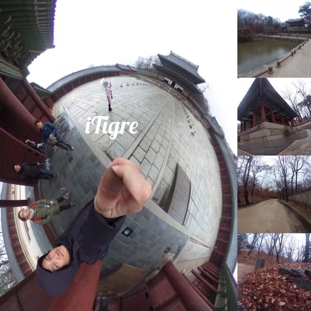
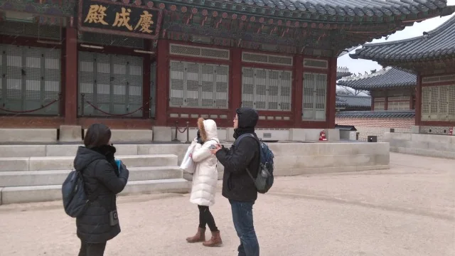
無敵神奇的！白色外套的女士居然有同期兩場的徒步導覽行程，大仔記得這一ＰＡＲＴ，我卻沒了印象！簡直斷片！以為只有和阿里山那團跟著切頭山導覽的伯伯的仁寺洞一次，居然整理照片時發現了這一張！！
不過我記得後來有買過他家手作的牛軋糖餅乾，然後好像去了飯店業以後就沒有下文了～
準備好沒？Keep recording。泰國 GO（在桃園機場），奇異博士 20 元奇異果汁在 B9 候機室。為了這台藏在大外套裡的電源，第一次在 X 光機卡關 10 分鐘，還再開箱掃描了一次。
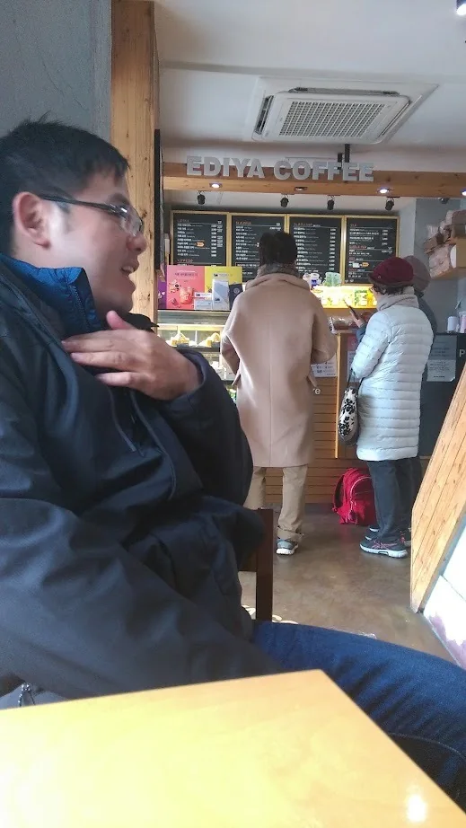
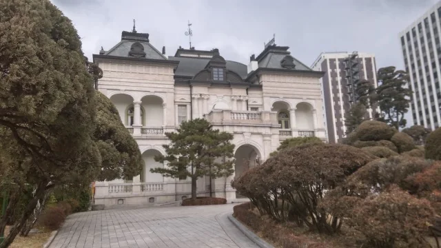
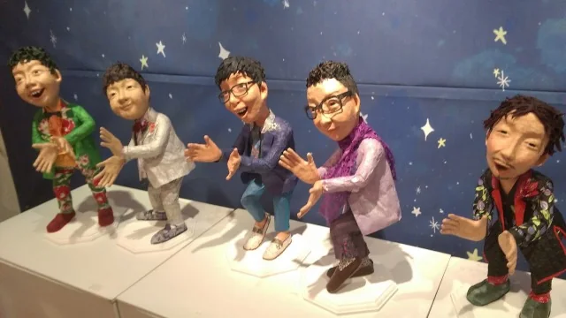
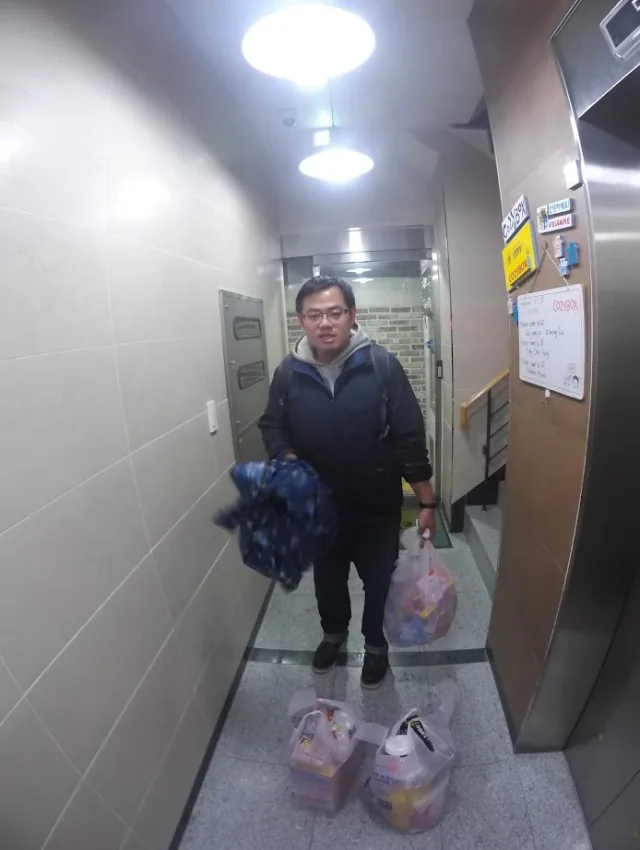
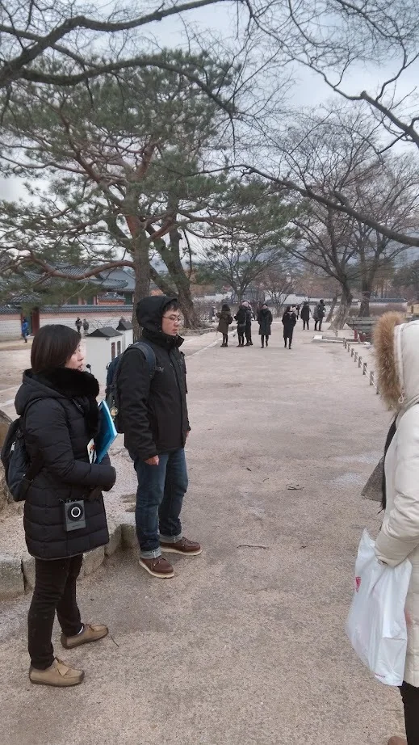
到東北亞補充 C 是很重要的，在仁川國際機場。30 公斤超重要的筆記，還好還有同學可以借一點重量。免費招待 Free Meal (JCB)。
這次超近的欸，在梨大。First day, fruit day 在新村。這次似乎是人氣店家欸，在 Nene Chicken (네네치킨)，Time’s up。
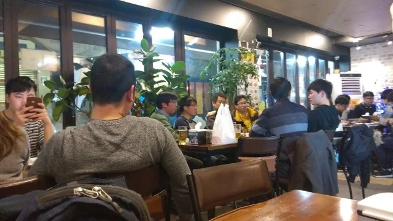
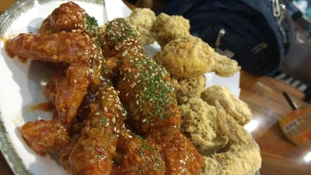
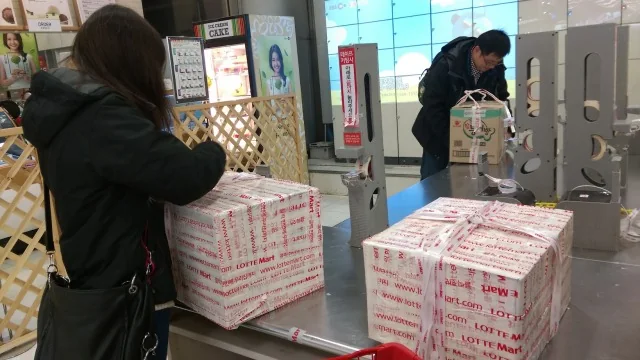
📌 **關於劉在錫與 Nene Chicken**
Nene Chicken 曾由「國民 MC」劉在錫代言長達十年以上，他的招牌笑容幾乎與這家炸雞畫上等號。那句經典的「네네치킨（是是的炸雞）」，是許多人到韓國第一晚必點的宵夜儀式。
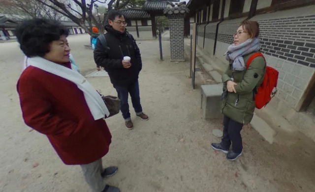
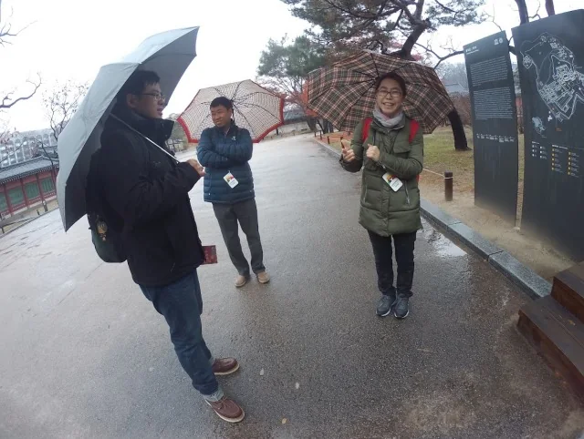
所以在梨大，手要這樣甩。24 小時真是梨大福音啊，冷麵特價但是沒人點。女學生都吃這麼早在梨大，冒煙的雞，醬油雞丁吃到飽在首爾梨花女子大學。大學前喝咖啡，心曠神怡，好多學生，Santabee 梨大便當街。
這裡是可以愛的，池恩倬、金高恩的學校呀。《孤單又燦爛的神－鬼怪》。啊，可愛的鬼怪新娘呢？
📌 **2016 年底的鬼怪效應**
《孤單又燦爛的神－鬼怪》在 2016 年 12 月初剛開播就引發追劇狂潮。劇中女主角池恩倬的校園場景，以及那句「大叔，撒啷嘿喲」，讓整個冬天的首爾都瀰漫著尋找鬼怪的氛圍。
前往找最美麗老闆娘之路，之，啊仁娜不在店裡啊（Sunny 劉寅娜）。仁娜不在只好吃百蔥炸雞。昨天拍下的闆娘視角。
👉 繼續閱讀：2016 首爾聖誕紀錄（中）：宮闕、市場與韓流聖地